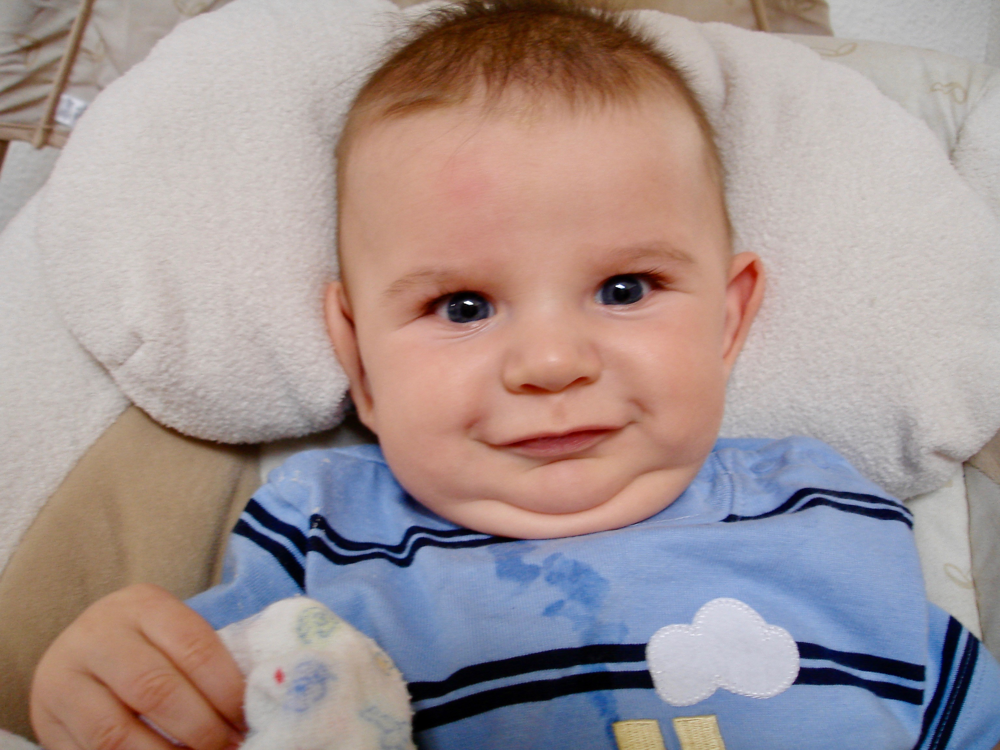
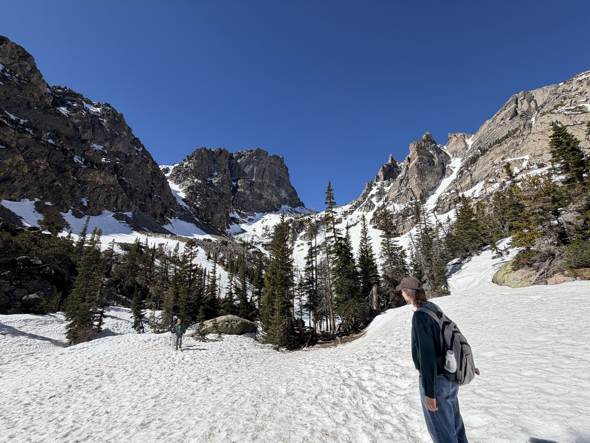

About me
A short autobiography...

I was born on February 26th, 2006 in Littleton, Colorado. Ever since then, I've been a Colorado resident, having lived in every corner of the Denver metro area (and for a time in Wyoming). I am a first-generation student at Colorado School of Mines now, studying electrical engineering.
I took interest in STEM at a pretty young age. My dad loved philosophy and from an early age introduced me to the ancient philosophers, whose goal it was to discover the truth of the world. My mom was a musician, so she taught me to appreciate all of the arts in whatever form. This eventually led to my love of video games, the synthesis of technology and art, and my entry into computer programming.
Although my dreams of becoming a video game programmer have long been dashed, my love of STEM continues on into my education and future career!
Career Goals
- Sustainability and the enviornment
I have grown up in a world that already seems to be leaving me. The exploitation of mankind has inflicted a great wound onto the very planet on which we live.
But that doesn't mean I don't have hope for our future. In my professional career, I wish to remedy what has already been done and set humanity back onto the path of sustainability. I want to prioritize an eco-friendly future for the next generations to come, so that they may also enjoy what we have now. Electrical engineering should not have to come at the cost of our great planet.
- Synthesis of art and technology
My original journey into STEM arose out of my love for video games. As I've grown older, I've also fallen in love with musical instruments. Art and the connection it brings is what I believe we ultimately live for. The synthesis of art and technology has always been one that excites me. It unifies two spheres of knowledge in such a cohesive way. I wish to continue this great tradition, and continue to make things that are beautiful in both such worlds.
- Doctorate Program
I've always loved to learn. What pushed me through STEM was just how much I loved to learn and challenge myself. But I don't want this to end after my bachelor's degree. Eventually, I would like to pursue a full doctorate in an engineering field. There is no greater good than to learn, and so I wish to keep doing just that.
Why hire me?
The answer I'd give to this question is simple, because I am driven.

I taught myself how to program in C# at the age of 10 not for some school credit, but because I wanted to make something difficult and do it right. Teaching myself to program in C++ in high school not for money, but because I wanted to push myself where I hadn't gone. I didn't choose Colorado School of Mines and work two part time jobs because it was going to be easy and cheap, I chose it because I wanted the challenge.
Engineering isn't just some way to make a quick buck to me. Engineering is the pinacle of human knowledge and creation. The only way we can keep pushing this peak further up is if we challenge ourselves. I believe myself to be well versed in pursuing this challenge, and I think I could bring the same attitude to the workplace.
Hobbies and Interests
All work and no play makes Caed a dull boy.
In my spare time, I love to play music. I play the electric and acoustic guitar, I play a synthesizer, and I produce my own music in FL studio (which can be seen here)
I also love to play video games and watch movies. I am particulary fond of the Half-Life and Portal series of games. My favorite movie is without a doubt The Thing.